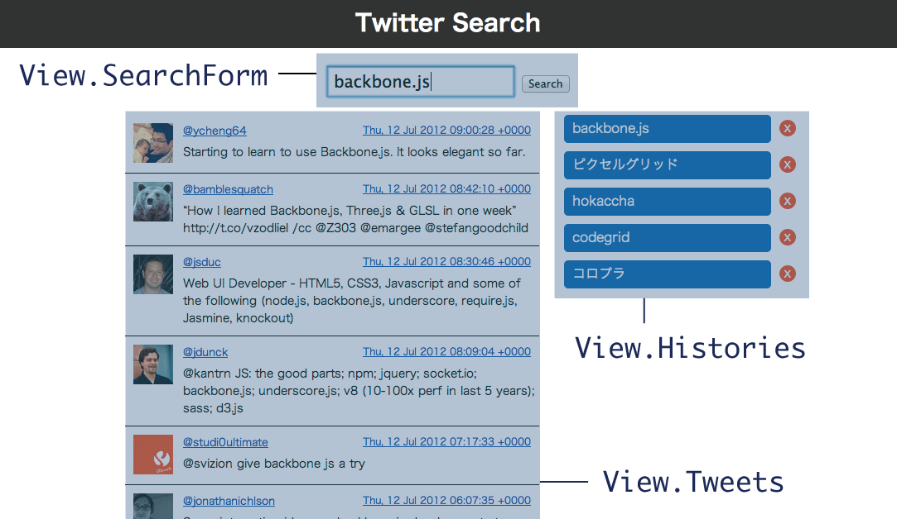

Backbone.jsでつくる
Webアプリケーション
2012/08/29
自己紹介
- 外村 和仁
- @hokaccha
- 株式会社 ピクセルグリッド
- JavaScript, Node.js, Ruby
今日やること
- Backbone.jsとは何か
- Backbone.jsのアーキテクチャ
- ライブコーディング
Backbone.jsとは何か
- JavaScriptのMVCフレームワーク
- 圧縮版で5.6KBと軽量
- 作者はCoffeeScript、underscore.jsなどを開発しているJeremy Ashkenas氏
その他のMVCフレームワーク
- Spine
- AngularJS
- Ember.js
Webアプリ制作時の問題点
問題点
機能を分けずに1ファイルに書いているので
- 再利用できない
- 分業できない
- テストできない
つまり
規模が大きくなったときに
管理しきれなくなる
どうすればいいか
とにかく分ける
- ファイルを分ける
- 役割を分ける
- 機能を分ける
そうするとどうなるか
- 再利用できる
- 分業できる
- テストできる
その手助けをするのがBackbone.js
Backbone.jsが解決すること
- 役割、機能の切り分け
- 大規模なコードの保守性の向上
- 長期的な生産性の向上
Backbone.jsが解決しないこと
- コード量の削減
- プログラムの高速化
- 小規模なコードの保守性の向上
- 短期的な生産性の向上
Backbone.jsの
アーキテクチャ




ライブコーディング
まとめ
- Backbone.jsは役割を分割することでメンテナンス性をよくすることができる
- あくまで一つの手段なのでBackbone.jsにこだわる必要はない
- アプリケーションを設計する力が必要になる